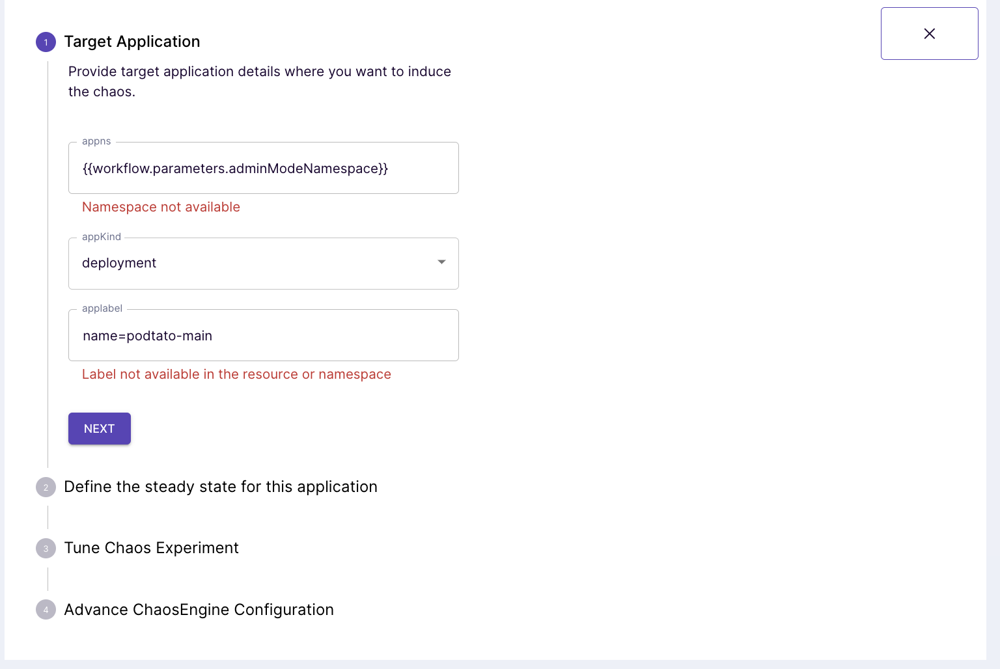
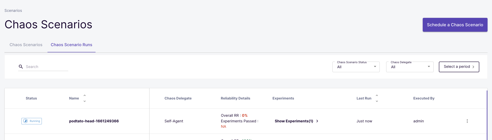

Welcome
In this tutorial, you will learn how to create your own steady-state hypothesis using pluggable checks called probes.
What you will learn
- What is a steady-state
- What is a Hypothesis
- Probes
- Different kinds of probes
In this tutorial, we would first go over what a chaos hypothesis is and why we have to care about them. We would then dive into what probes are, the different types of probes, and when to use them. Lastly, we would use these probes to create pluggable chaos checks in a sample application.
Pre-Requisites
- Minikube 1.2.0 or later. Recommended sizing of at least: 2 vCPUs, 8GB memory, 10GB of disk space (for persistent volume creation)
- Helm3 or Kubectl
- Access to the Internet from Cluster
- Have Litmus 2.x.x installed.
- Basic Understanding of Litmus.
A hypothesis in chaos engineering is a supposition or expectation about the behavior of a system, it is a guess of the expected behavior of an application. When chaos is induced on your cluster, what happens to the application? how does it respond? does it kill a pod, cause a network loss, or break a downstream application? what happens to the all-around system stability or is there still something that needs to be fixed. Hypothesis are the seeds for further investigation and to learn more about the behavior of the overall system.
Sometimes, the hypothesis directly translates to an expected result while sometimes it is only a hint to further investigation that can lead to a more solid result after prolonged experimentation.
In this tutorial, we would talk about creating hypotheses in Litmus using something called Litmus probes, you will learn about Litmus probes, the different kinds of probes, and how to use them.
Steady State
The steady-state of a system is a measurement that indicates a laid down measurable attributes of that system which depicts that things are all good. This can be performance values, latency measurements, availability, etc
It is an important chaos engineering principle to build hypotheses around the steady-state of the system. It allows you to automate the process of gauging, analyzing, and reporting failures that occurred during the course of an experiment. This will in turn let you gain valuable insights about the resilience of the system.
Litmus probes are pluggable checks that can be defined within the chaos engine for any chaos experiment. They execute in different modes. The experiment pods execute the checks based on the modes they are defined in and factors their success as necessary conditions in determining the verdict of the experiment.
Types of Probes
Litmus currently has support for four types of probes:
- httpProbe
- cmdProbe
- k8sProbe
- promProbe
httpProbe
The httpProbe allows developers to specify a URL which the experiment uses to gauge health/service availability (or other custom conditions) as part of the entry/exit criteria. The received status code is mapped against an expected status. It supports http Get and Post methods.
cmdProbe
The cmdProbe allows developers to run shell commands and match the resulting output as part of the entry/exit criteria. The intent behind this probe was to allow users to implement a non-standard & imperative way for expressing their hypothesis. For example, the cmdProbe enables you to check for specific data within a database, parse the value out of a JSON blob being dumped into a certain path or check for the existence of a particular string in the service logs.
k8sProbe
With the proliferation of custom resources & operators, especially in the case of stateful applications, the steady-state is manifested as status parameters/flags within Kubernetes resources. k8sProbe addresses verification of the desired resource state by allowing users to define the Kubernetes GVR (group-version-resource) with appropriate filters (field selectors/label selectors). The experiment makes use of the Kubernetes Dynamic Client to achieve this.The k8sProbe can be defined at .spec.experiments[].spec.probe the path inside ChaosEngine.
It supports CRUD operations that let you create, delete, and check for the presence or absence of K8s resources.
promProbe
The promProbe allows users to run Prometheus queries and match the resulting output against specific conditions. The intent behind this probe is to allow users to define metrics-based SLOs in a declarative way and determine the experiment verdict based on its success. The probe runs the query on a Prometheus server defined by the endpoint, and checks whether the output satisfies the specified criteria.
Setup Modes
The probes can be made to run in different modes:
- SOT: Excited at the start as a pre-chaos check.
- EOT: Executed at the end of the test as a post-chaos check.
- EDGE: Executed both before and after the chaos.
- CONTINUOS: The probe is executed continuously, with a specified polling interval during the chaos injection.
- OnCHAOS: The probe is executed continuously, with a specified polling interval strictly for the duration of the chaos.
Please visit the official documentation of probes to learn more about them.
Probes were introduced in Litmus version 1.8 with a declarative approach in mind, Litmus version 2.x even takes this approach a step further by making it visual with the Litmus ChaosCenter.
In this section, you will learn how you can add probes to an experiment using the Litmus ChaosCenter. You will add an HTTP probe to a pod-delete experiment.
Create a scenario
First, you need to log in to your litmus ChaosCenter and create a scenario.
First, navigate to the Scenarios tab on the ChaosCenter and click the Schedule a scenario button. This will take you to the scenario page.
You need to select a Target Delegate to proceed, these delegates consist of CRDs and the required resources to run a chaos scenario. While installing the Litmus ChaosCenter, a default delegate named Self Agent is created. Select the Self Agent.
Then, you will see four different options from which you can create a scenario. For this tutorial, we will only care about the Create a new scenario from one of the pre-defined chaos scenario templates options. Select this option, select MyHub and choose the potato-head experiment.
Click Next to proceed.
Edit the description and name, if necessary, and click next.
Add a new experiment
Because we are using a predefined scenario, you will see an option to select and already added experiment. Select this experiment(podtato-main-pod-delete-chaos)
Induce a Probe
When you click on an experiment, you're faced with four sections:
- General
- Target Application
- Defining the steady-state
- Tune Experiment

For now, we only care about the third option, click next two times without editing the contents of the first two options, so we can define a steady-state for our hypothesis.
Because we are using a pre-defined scenario, a steady-state hypothesis has been pre-defined for us. Let us examine this hypothesis.
This probe has a check called check-podtato-main-access-url, if you click on the "show details" button, you will see that it checks a url and verifies if an http get call against the url is going to return a status of 200.
If you click on the show properties button, you will see that it does this request every one second and retries failed requests only once.

Click the Next button below to proceed.
You can assign weights to the experiments present in the scenario. These weights will be then used for the calculation of the resilience score after the scenario completion. By default, 10 points are assigned to each experiment. This can be altered as per your use case. After selecting weights click on the Next Button.
Scenarios can also be scheduled in two ways;
- Schedule now: This option allows the scenario will start as soon as you schedule it.
- Recurring Schedule: This option will allow you to schedule the scenario in recurring ways. It converts a normal scenario to Cron scenario and a cron syntax is added in the scenario manifest. The following methods are available to schedule a scenario in recurring ways:
- Every Hour
- Every Day
- Every Week
- Every Month
Select the Schedule now option and click next.

Verify and commit
Here, you can validate all the changes related to the scenario like the scenario name, the experiment weights, scenario description, scenario manifest, etc. Once you have verified all the changes, you can click the Finish button to start the schedule.
Click the go-to scenario button to see the scenario in action.


The scenario will have a status of pending while it is still running, click on the three vertical dots beside the scenario and view the scenario.

Keep observing the scenario and over time, you will see the probes being induced into the system as shown below.

Let's confirm this, click on the pod-delete in the flow diagram above, then select Chaos Results. You should see the below.

Scroll down to the bottom, and you will see a part in the result YAML that indicates the status of the probe.

In this tutorial, you were introduced to how to the concept of hypothesis in chaos engineering and why it is important that this hypothesis is built around the steady-state of the application. You then learned about Litmus probes, their different types and modes, and how to use them.
You were also able to observe at the end of the experiment that our probes on the scenario met the steady state hypothesis of our application, causing the experiment to pass.
Please visit us in our LitmusSlack Channel (in Kubernetes workspace) and tell us how you like LitmusChaos and this tutorial! We are happy to hear your thoughts & suggestions!
Also, make sure to follow us on Twitter to get the latest news on LitmusChaos, our tutorials and newest releases!